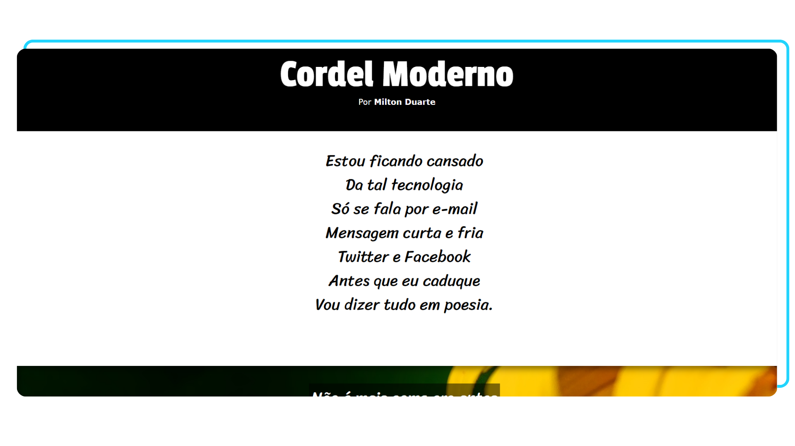

Projeto Poema Cordel Moderno
Acesse o projeto clicando na imagem
O que é este projeto?
Este projeto consiste em um site responsivo focado 100% no Front-end.
Este projeto foi desenvolvido para abrigar o poema "Cordel Moderno", criado pelo escritor e cordelista Milton Duarte. Com a intenção de enriquecer essa obra, o projeto em questão oferece imagens e textos agradáveis para acompanhar o incrível cordel do autor.
O que foi usado neste projeto?
Neste projeto, foi utilizado HTML e CSS. O foco principal está voltado para o aprendizado sobre o efeito parallax em CSS, o qual foi aplicado nas imagens do projeto para criar um efeito visual dinâmico e atrativo.
Este projeto foi desenvolvido com base no capítulo 20 do curso "HTML5 e CSS3: módulo 3 de 5" da plataforma Curso em Vídeo.
Voltar para a página anterior